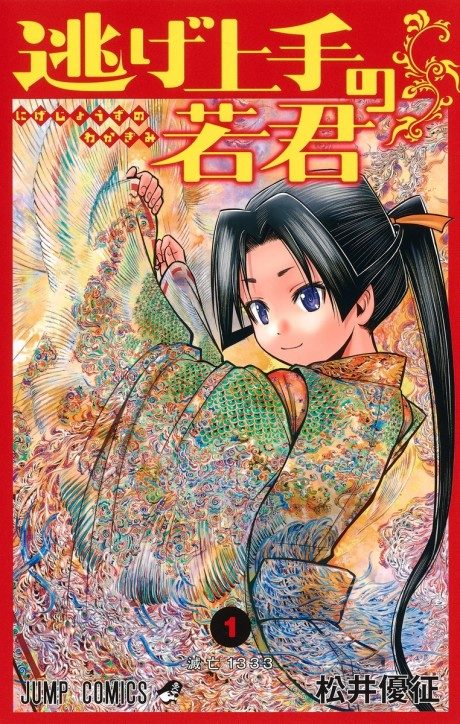

Anime
Anime
MangaThe Elusive Samurai
逃げ上手の若君
The anime takes the story to Unclear.
7.7AniList
—Animeter
24 ep2 seasons
Anime finished. Where does the manga pick up?
StatusNo source yet
We looked for where the anime ends in the manga but found no source we trust yet. The manga is 239 chapters, finished.